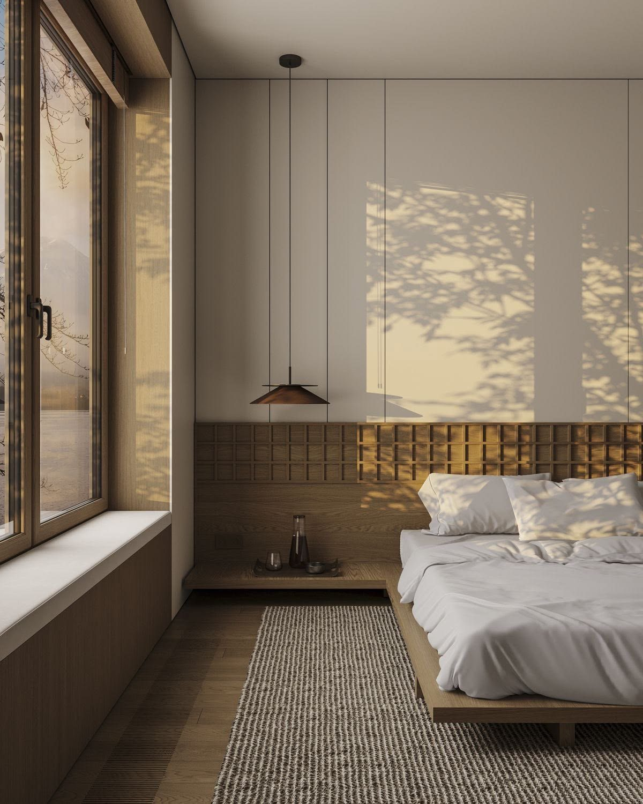
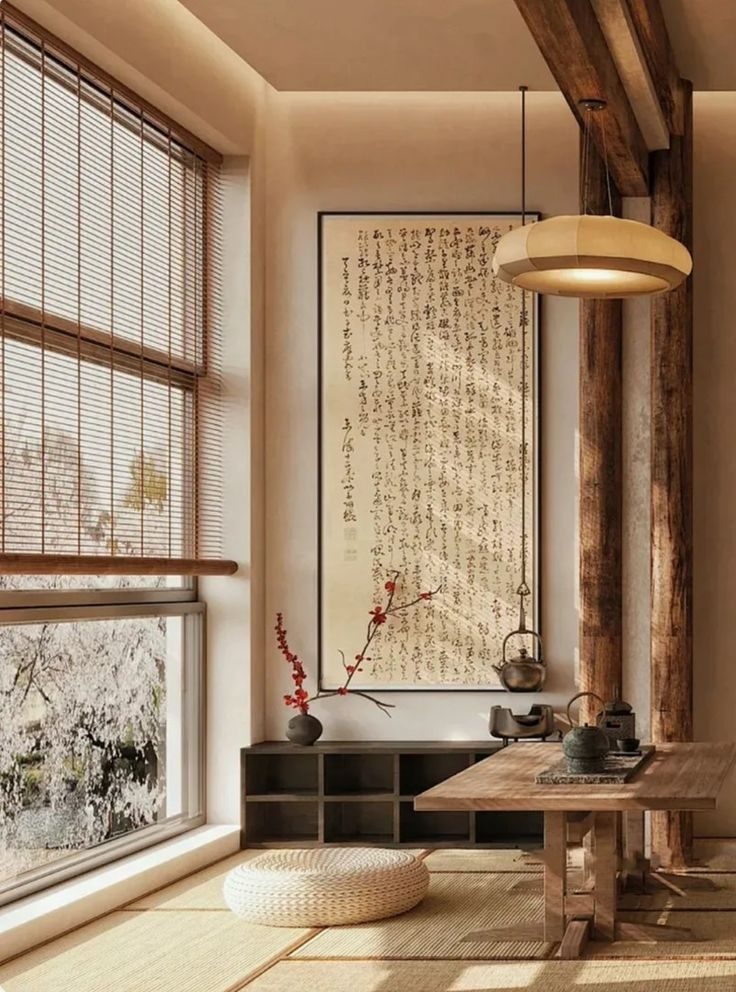
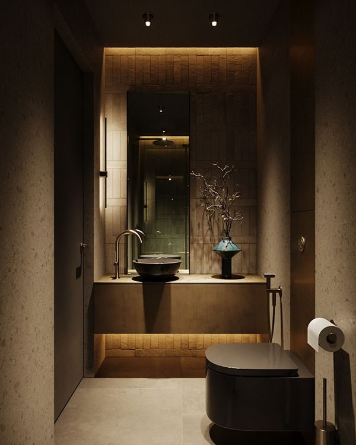
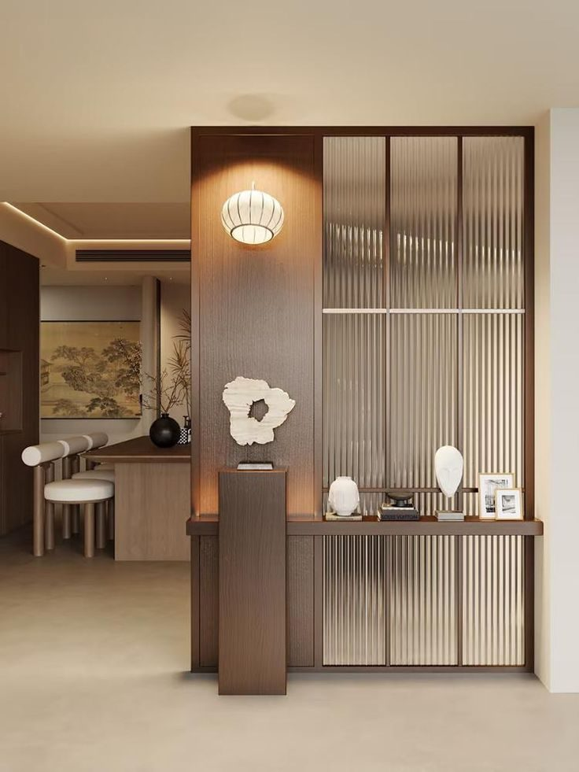

減法新中式 室內設計
竹影居 住宅・台中・32 坪
設計理念：減法新中式
Philosophy
我們做的多半是減法。
拿掉多餘的裝飾，留下光、材料，
和生活真正需要的東西。
-

留白
牆面不急著填滿。空著的地方讓光和影子有位置，也讓眼睛休息。
-

借景
窗外的樹、山和街上的光，都是室內的一部分。窗開在哪裡、開多高，是我們最先決定的事。
-

天然材質
木、石、竹與土牆會隨時間留下痕跡。我們選擇會變老，而且老得好看的材料。
Projects
專案圖庫
每個案子都從屋主的生活開始。點開照片，看我們怎麼把需求變成空間。
Space Tour
走進竹影居
32 坪、三房的住宅。點平面圖上的編號，照著進門後的動線，一間一間看。

Process
從第一次見面到交屋
一間 30 坪左右的住宅，從諮詢到完工大約需要四到六個月。每一步都有明確的時間和交付內容。
-
1
諮詢
約 60 分鐘・免費
聊你的生活習慣、家人、預算與喜歡的空間，確認我們適不適合一起工作。
-
2
丈量
3–5 天
到現場丈量、拍照，記錄採光方向、窗外景色和管線位置。
-
3
提案
3–4 週
提出平面配置、3D 模擬與實體材料樣板，來回調整到你點頭為止。
-
4
施工
2–4 個月
由固定合作的工班施作，每週回報進度照片，重要節點邀你到現場確認。
-
5
完工
交屋後保固一年
一起驗收、交屋，附上材料保養說明。一年內有任何問題都可以找我們。
Contact
預約諮詢
留下你的需求，我們會在兩個工作天內回信，約一個方便的時間見面。第一次諮詢不收費。
- 工作室
- 台中市西區・採預約制
- 時間
- 週二至週六 10:00–18:00
- hello@qibai.example